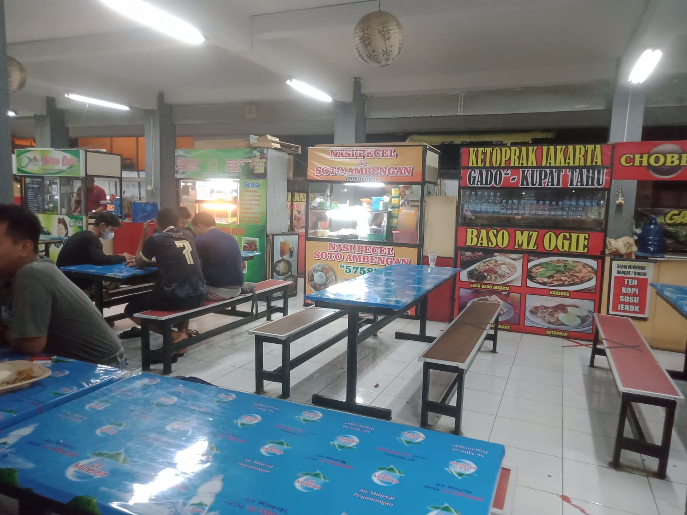

Pratistha Harsa – Pereng is the center of culinary spot in Purwokerto. It is located about 100 meters to the west town square. Pratista Harsa was built by the local government of Banyumas Regency, to gather all the trade of street vendors in the town square.
It has 2 stairs on it’s building. The traders are quite neatly and clean, hence the place looks comfortable. Unfortunately the traders are not fully open from morning to night, the average food seller is open from around 3 to 9 at night.
[photo 1]
[photo 2]
The culinary choices are quite diverse, from Purwokerto specialties such as mendoan and fried foods or other market snacks, Meatballs, Noodles, Fried Rice, Black Glutinous Porridge, Green Bean Porridge, Various Juices, various variants of Fried Chicken, Gudeg, Corn Porridge and many others. Some of the ones we tried were Siomay, Corn Porridge, Black Glutinous Porridge and Juice.
Street vendors is a one of the phenomenon problem in Purwokerto City. The growth of street vendors from year to year is getting increase and uncontrollable. The number of street vendors in 2009 there were only 769 street vendors, and in 2014 it increased to 998 street vendors. Though enforcement has been carried out but this does not make the street vendors who trading along the shoulder of the road is significantly reduced (Dinperindagkop Banyumas Regency, 2015).
The Goverment regulated on the district regulation (Perda Kab. Banyumas Nomor 4 Tahun 2011) about Structuring and Empowering Street Vendors. One of the government's efforts to provide facilities to street vendors is implement policies regarding relocation or proper placement for merchants street vendors, namely, by providing strategic land for the marketing of goods the merchandise of the street vendors. In this case the interests of the merchant street vendors can be fulfilled and of course the government can also consider that the land does not disturb the order and comfort of the city so it is hoped that the interests of the government and street vendors can be fulfilled so that it can create a form of policy resolution that means cleanliness, beauty and tidiness city can be realized, the welfare of the people of street vendors can be realized.
This relocation traders from the town square to Pratistha Harsa has the aim of improving the quality of merchant services. In the other words, it is hoped that it can help traders in Pratistha Harsa to develop their businesses and improve the welfare of traders.
Pratistha Harsa is also a very strategic place, because it is located in the city center. The traders who sell in these places can market their products more optimistically. However, there is competition between culinary centers in Purwokerto City. This has resulted in competition between culinary centers, and Pratistha Harsa needs a development strategy so that the people of Purwokerto and its surroundings are increasingly known.
Basically, relocation activities have positive and negative impacts both in terms of in terms of income and costs as well as the social environment for traders in Pratistha Harsa and also for other economic actors (consumers and government). Considering the various possible impacts that can be caused by relocation activities traders at Pratistha Harsa, the researchers are interested in doing Strategy Analysis Culinary Product Development at Pratistha Harsa Culinary Center Purwokerto.